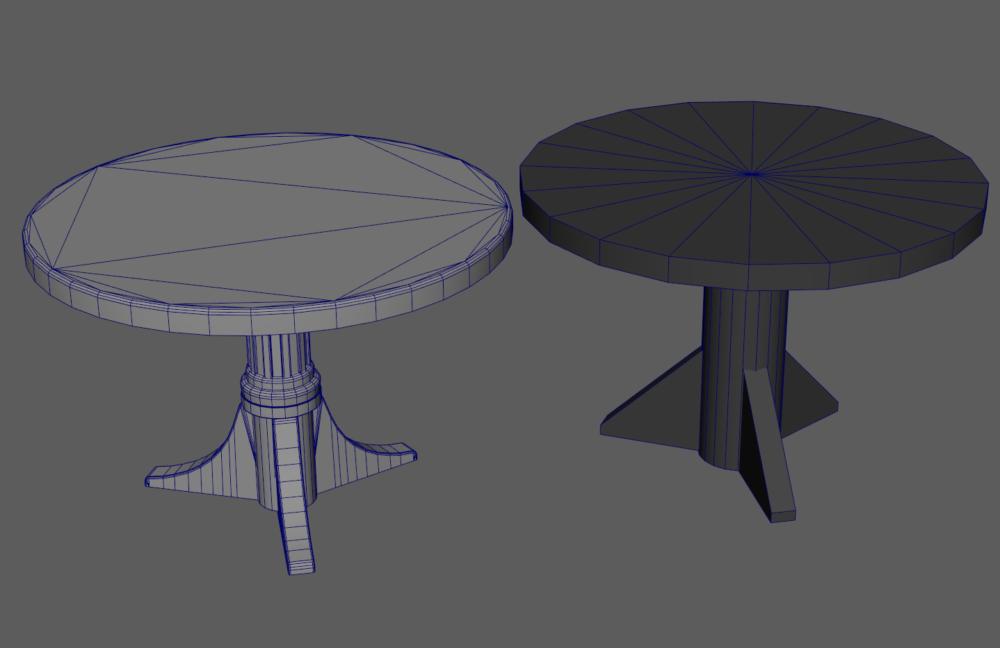

DISEÑO Y CREACIÓN DE ESCENARIOS ESTILIZADOS
Cuando ya dispones de los bocetos y los conceptos visuales, es el momento de abordar la
composición del escenario. Esto implica considerar aspectos como la perspectiva, la escala y la
disposición de los elementos dentro del entorno. Además, debes prestar atención a la
iluminación, incluyendo sombras y efectos de luz, para dotar al escenario de profundidad y
realismo.
Para los fines prácticos de esta guía, hemos obtenido la autorización de la talentosa artista
visual Keira Santoso, cuyo trabajo es una asombrosa manifestación en la creación de entornos
para videojuegos. Con su generosa autorización, utilizaremos su obra 'The Iris Den' como un
ejemplo práctico en esta guía. Este proyecto ofrece la oportunidad de explorar una diversidad de
técnicas empleadas en la creación de escenarios estilizados, desde el boceto conceptual inicial
hasta su implementación final en un videojuego.
Level blockout
El "blockout" es el siguiente paso concreto que te recomeindo en esta guia para la creación de tu escenario estilizado. Este paso consiste en la creación de una versión simplificada o esquemática del entorno. Durante esta fase, no te debes preocupar por los detalles visuales ni los activos específicos, sino que te centrararás en la estructura y la escala. Es decir, diseñaras un nivel 3D como borrador ya que este proceso te permitirá medir y ajustar la longitud, el ancho y la altura de tu escenario, asegurándote de que se ajuste a la visión del juego y que proporcione la experiencia deseada para los jugadores.
El "blockout" es una parte crucial del diseño de escenarios, ya que establece una base sólida
sobre
la cual construirás los elementos visuales y de jugabilidad. A medida que avances en este
proceso,
estarás mejor preparado para abordar aspectos posteriores del diseño, como la creación de
activos
visuales, la integración de la narrativa y la jugabilidad.
Como esta guía se enfoca en la creación práctica de escenarios estilizados, no profundizaremos
en
temas específicos, como la creación de niveles. Sin embargo, es una práctica recomendable
adquirir
un entendimiento general del proceso de diseño de niveles en videojuegos. Te invito a investigar
y
aprender más sobre este tema para complementar tu conocimiento en la creación de escenarios
estilizados.
Proxy Phase
En esta etapa del desarrollo de escenarios estilizados, Te debes enfocar en la creación de las formas básicas del escenario, especialmente en lo que respecta a elementos modulares. Durante esta fase, trabajaras en la concepción de modelos proxy que servirán como representaciones simplificadas de los activos finales. Estos modelos proxy te permitirán evaluar y ajustar la disposición y la jugabilidad del escenario antes de avanzar en la creación de activos detallados.

Es fundamental comprender que en esta etapa,
estarás creando
representaciones simplificadas de los elementos del escenario, caracterizadas por su menor nivel de
detalle y menor cantidad de polígonos en comparación con las versiones finales. Estos modelos
básicos se diseñan con la finalidad de facilitar la composición de la escena y permitirte evaluar la
atmósfera y la dinámica que deseas transmitir en tu proyecto.
Estos modelos de baja resolución en la Proxy Phase se reemplazan gradualmente por activos de alta
calidad.

La clave radica en la simplicidad y en la capacidad de identificar rápidamente los elementos que se repiten, lo que te proporcionará una base sólida para la escena. No es necesario que te preocupes en exceso por los detalles en esta etapa. En su lugar, enfócate en la creación de modelos de baja resolución que representen la forma general de los elementos que estarán presentes. Esto te brindará una comprensión más clara de la composición general de la escena.
Layout
En esta fase, estamos en el punto medio del proceso de creación de un escenario. Imagina que estamos
decorando una habitación. Antes de empezar a poner cuadros en las paredes o detalles bonitos,
primero necesitamos decidir dónde van los muebles, como estaran las sillas y las mesas. Eso es lo
que hacemos en la fase de "Layout". No estamos ocupados con los detalles todavía, solo organizando
los elementos principales.
Una vez que estemos contentos con la disposición de los muebles, avanzamos a la siguiente etapa. Es
como cuando finalmente puedes empezar a decorar la habitación con cuadros, cortinas y cojines. En
nuestro caso, eso significa agregar detalles visuales, texturas y efectos especiales al escenario.
Esto hará que el lugar se vea hermoso y lleno de vida.
En este punto puedes llegar a pensar que la fase de "Level Blockout" y "Layout" son similares
pero son dos etapas distintas en la creación de un escenario. la principal diferencia es que la
etapa de Layout trataras la organización general de los elementos, mientras que el Level
Blockout implica crear modelos básicos para evaluar la estructura del escenario antes de
detallarlo visualmente. Ambos son importantes pasos en el proceso de diseño de escenarios, y
cada uno tiene su propósito específico.